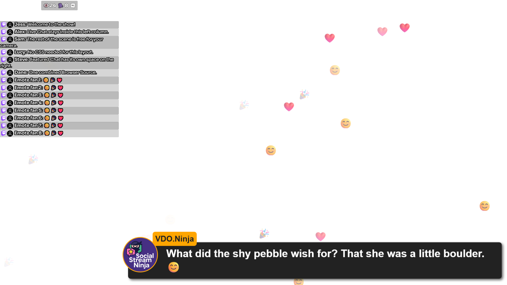

Split chat by platform in 4 steps
Example: one overlay shows only Twitch chat, another shows only YouTube chat. You still read everything in one Dock.
- Add all your chats to Social Stream Ninja. Check one new message from each shows up in your Voogesituse vestlusdokk. Keep that Dock unfiltered. It's your own view.
- Copy your generated
dock.htmllink twice. Copying keeps your session, password, version, and server settings. - Add a filter to the end of each copy, like
&onlyfrom=twitch&hidemenu(see the table below). - Add each link to OBS as its own Brauseri allikas. Name them clearly, like Twitch chat ja YouTube chat.

- Jäädvustamine Twitch + YouTube
- One SSN session Your Dock sees both
- OBS views Twitch-only and YouTube-only
Filter options for chat overlays
| I want to show… | Add to the Dock link |
|---|---|
| Twitch only | &onlyfrom=twitch&hidemenu |
| YouTube only | &onlyfrom=youtube&hidemenu |
| Twitch and YouTube together | &onlyfrom=twitch,youtube&hidemenu |
| Everything except Discord | &hidefrom=discord&hidemenu |
A full example:
https://socialstream.ninja/dock.html?session=YOUR_SESSION_ID&onlyfrom=twitch&hidemenuonlyfrom ja hidefrom here. Options from other overlays, like onlytype, may not work on this page. YouTube Shorts is its own type: add youtubeshorts if your capture reports it. See Source types.Split Featured Chat (selected messages)
- Copy your generated
featured.htmllink twice. - Lisa
&onlyfrom=twitchto one and&onlyfrom=youtubeto the other. - Keep your Dock open to pick messages.
twitch,youtube) only works on the Dock.The filter only decides which picks a page accepts. It doesn't give you separate queues. A rejected pick doesn't clear the screen either. When you switch segments, clear the featured message yourself so an old one isn't left showing.
Two channels on the same platform
onlyfrom=twitch means all of Twitch, not one Twitch channel. Channel names and stream titles can't be used as filter names.
| ma tahan… | Tehke seda |
|---|---|
| Show which channel each message came from | Lisa &showchannelname (works when the source sends a channel name). |
| Run two fully separate shows | Use separate capture instances or profiles, each with its own session, each opening only its own sources. |
| Filter the Dock by browser tab | &filtertid=123 (advanced, see below). |
To identify which creator received a message, Super Chat, membership, or gift in your combined chat and queue, enable originating channel names.
label names the page for routing; it is not a channel filter.How filtertid works
- It takes the numeric ID of the browser tab the message came from. Separate several with commas.
- Find the
tidin a real captured payload. See the Event reference ja Käsud ja API. - It is not a platform channel ID.
- Tab IDs can change when a source reopens. Sources without a matching tab ID may be hidden.
- It works on the Dock only, not as a Featured Chat channel filter.
Test each view
- Send a fake Twitch message and a fake YouTube message into a test session. Use Create test messages.
- Check both show in your Dock, and each chat overlay shows only its own platform.
- Feature each message, then press clear. Check every featured page after switching platforms.
- Repeat with a real message from each of your sources. Fake messages don't have real tab IDs.
| Probleem | Proovi seda |
|---|---|
| A view is blank | Remove its filter for a moment. If chat comes back, check the exact source type or tab ID. |
| Still blank without the filter | Vt session and routing troubleshooting. |
| Renamed the OBS source but nothing changed | Renaming doesn't change the saved link. Edit the URL itself. |
Chat and alerts in one browser tab
Combine overlays stacks your overlay links into one tab or one OBS Browser Source. Handy for reading chat on your phone during an IRL stream.
- Kleepige oma Voogesituse vestlusdokk link into the bottom layer.
- Kleepige oma Multi-Stream Alert Box link into the top layer. Keep the full links, with session, password, and connection options.
- Leave Transparent SSN background checked.
- Lülitage sisse Allow taps and scrolling on this layer for chat. Turn it off for alerts, so they don't block chat.
- Vajutage Preview, then Show QR code and scan it with your phone. Or press Copy combined link to paste into a Browser Source.
The combined view has no setup controls. It just shows your overlays.
Layer options
| ma tahan… | Tehke seda |
|---|---|
| Add more overlays | Up to eight links. |
| Put a layer in front or behind | Use the arrow buttons. |
| Size or move a layer | Avatud Size and position. Set width, height, left, and top in pixels (450) or percent (100%). |
| Make a layer fullscreen again | Reset to fullscreen. Blank width and height fill the browser; blank left and top start at the top-left corner. |
| Make a left chat column (1920×1080) | Chat layer: width 450, height 1080, left 0, top 0. Other layers stay fullscreen. |
| Edit a combined link later | Use the editable link, or add ?edit=1 before the #. |
| Start over | Clear saved setup. |
Pixel sizes stay fixed when the browser resizes. Percentages follow it. Each overlay keeps its own content and settings.
Saving, phones, and privacy
- Your links and layer options save automatically in this browser, even unfinished ones. Private browsing may not keep them.
- The combined link and QR code hold the whole layout. Set it up on desktop, scan once, then bookmark it on your phone. Opening it also saves the setup in the phone's browser.
- Edits on desktop don't update an older link. Copy or scan the new link after editing. Nothing syncs through your session ID.
- Keep combined links and QR codes as private as your overlay links.
- SSN capture must still be running, and the phone must reach the same servers as the original links.
localhostvõi127.0.0.1means the phone itself. - Very long links may not fit in a QR code. You can still copy the link.
OBS recipe: left chat column with fullscreen effects
No CSS needed. Each layer is its own area. Set the OBS Browser Source to 1920×1080. Add layers bottom first, and type just the numbers (no commas, no “px”) under each layer's Size and position.
| Layer | Width | Height | Left | Top |
|---|---|---|---|---|
| 1. Live Chat / Dock | 450 | 1000 | 0 | 80 |
| 2. Hype counter | 450 | 80 | 0 | 0 |
| 3. Emoji / Emote Wall | 1920 | 1080 | 0 | 0 |
| 4. Featured Chat | 1470 | 1080 | 450 | 0 |
| 5. NinjaBacker (optional) | 1920 | 1080 | 0 | 0 |
The top 80 pixels hold Hype, with the chat column below. Want chat full height behind Hype? Set Live Chat's height to 1080 and top to 0. Other scene sizes need other numbers.
- Paste your full overlay links. Copy them from your existing Browser Sources so session, password, styles, and connection settings come along. Leave Transparent SSN background checked. OBS crops, transforms, filters, and Custom CSS are not in the link and won't carry over.
- Center Hype in the column. On the
hype.htmllink, use&align=center. Replace anyalign=leftvõialign=right, and removealignright. For a compact look, try&combineall&hidetitle&style=compact&scale=0.75(replace values that are already there). Make the Hype layer taller if your style needs room. - Keep Featured Chat beside the chat column. Määra Left = 450 ja Width = 1470 together (450 + 1470 = 1920). Moving a 1920-wide layer right would cut off its edge. Add
¢erjuurdefeatured.htmlto center short messages in that area. To center across the whole scene, use Left 0, Width 1920, and¢er. - Put NinjaBacker last (optional). Paste its viewer overlay link as the top layer, with its right-entry animation setting. The combiner sets its area and order; NinjaBacker sets its own animation. Its background must be transparent and its site must allow embedding. This layer wasn't part of the tested example.
- Preview at 1920×1080. Send a chat message with emojis, feature a message from your Dock, and turn on Hype data in SSN. Normal chat doesn't pick a featured message on its own.
- Copy the new combined link into OBS. Set that Browser Source to Width 1920, Height 1080. The preview size doesn't set this. Fit it to your scene without cropping. After every layout change, copy the link again; the old link keeps the old layout.

If a layer is blank or covers chat
| Probleem | Proovi seda |
|---|---|
| A layer is empty | Open its original link on its own first. Alerts stay empty until an event arrives. Combining doesn't capture anything new. |
| A layer has a solid background | Automatic transparency works for dock.html, featured.html, multi-alerts.html, ja minecraft.html. Other pages need their own transparent setting. Some outside sites block embedding. |
| Can't tap or scroll chat | A see-through layer can still block taps. Turn off Allow taps and scrolling on layers above chat that don't need it. |
| No sound on the phone | Phones may need a tap before playing sound. Turn on taps for that layer and tap it. Test on the real phone before relying on it. |